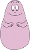
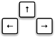
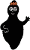
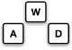

Il était très important pour moi de toujours avoir un but devant les yeux pendant la réalisation du projet: Je voulais savoir à quoi la version finale devrait ressembler et à chaque moment, savoir ce que je devais faire en prochain. C'est pour cela que j'ai décidé de programmer un jeu, et aussi parce-que je n'aimais pas trop TKinter et que je voulais plutôt traviller avec pygame... Mon idée initiale était de reproduire un jeu un peu comme Feuer und Wasser (un jeu 'jump and run' très connu de la plateforme de jeu allemande spieleaffe.de). Un avantage de ce jeu était que d’un côté je pouvais garder des dimensions assez simples et que de l’autre côté je pouvais toujours rajouter des choses. Le jeu se joue seul ou à deux, puisqu’il existe deux joueurs qui doivent s’entraider pour gagner. Je me suis mise à réfléchir, car je voulais trouver un thème différent à celui de Spieleaffe et j'ai décidé d'utiliser les caractères de Barbapapa – une série française que j'adorais regarder quand j'étais petite. De cette manière, le jeu est conçu pour des enfants entre environ 6 et 12 ans.
Pour faire bouger Barbapapa, utiliser les touches flèche
 
Pour faire bouger Barbamama, utiliser les touches WAD
